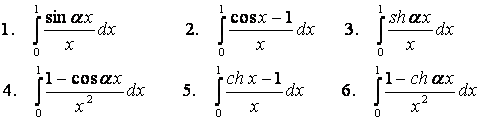
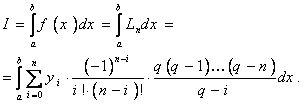

|
ЧИСЛЕННОЕ ИНТЕГРИРОВАНИЕ Рассмотрим интеграл вида
. Для приближенного вычисления интеграла I(f) строятся линейные квадратурные формулы (квадратуры) следующего вида:
Для каждой функции f(x)∈F погрешность квадратурной формулы Sn(f) определяется как Rn(f)=I(f)-Sn(f). При этом оценкой погрешности на классе F называют величину
ЛАБОРАТОРНАЯ РАБОТА 6.1 Составные квадратурные формулы. Приведем несколько составных квадратурных формул, построенных на равномерной сетке. 1.Формула центральных прямоугольников:
2.Формула трапеций:
3.Формула Симпсона:
При вычислении интеграла (1) с заданной точностью ε используется формула Рунге приближенной оценки погрешности: вычисления проводятся на сгущающейся сетке до выполнения условия
Посмотреть пример на Java . Задание: 1) Составить программу вычисления интеграла (1) с заданной точностью. Варианты заданий:  Посмотреть пример выполнения задания на Java . Замечание. Отладку программы проводить на функциях, для которых используемая квадратурная формула является точной. Посмотреть пример выполнения задания в Microsoft Excel. 2) Вычислить функцию, используя составленную программу. Варианты заданий:
Посмотреть пример выполнения задания на Java .
ЛАБОРАТОРНАЯ РАБОТА 6.2. Интегрирование квадратурными формулами Ньютона-Котеса. Пусть некоторая функция f(х), как и раньше, задана в виде таблицы значений yi=f(хi) в узлах интерполяции хi=х0+ih на отрезке [а,b]. Требуется найти значения интеграла
По заданным значениям подынтегральной функции yi=f(хi) построим интерполяционный полином Лагранжа
Теперь заменим подынтегральную функцию f(х) построенным полиномом, считая, что узлы интерполяции расположены равномерно:  Проведя необходимые элементарные преобразования, выполнив замену переменных dq=dx/n и сменив в соответствии с подстановкой пределы интегрирования, получим Здесь h- шаг, который для равноотстоящих узлов интерполяции определяется как h=(b-а)/n. Подставив значения h в последнюю формулу, окончательно получим
Нi - коэффициенты Ньютона - Котеса. Они не зависят от значений функции f(х) и являются функциями только количества узлов, на которые разбит отрезок [а,b]. Поэтому Нi обычно вычисляют заранее:
H2 = H4 = 9/280, Н3 = 34/105;
H2 = H5 = 1323/17280; Н3 = Н4 = 2989/17280. Если теперь рассмотреть частные случаи формулы Ньютона - Котеса, то: 1) при n = 1 получаем формулу трапеций: 2) при n = 2 получаем формулу Симпсона: 3) при n = 3 получаем формулу "трех восьмых": Задание: Составить программу вычисления определённого интеграла: Для проверки работы программы вычислять определенный интеграл параллельно с помощью простейших формул интегрирования из первой части этой лабораторной работы. Для вычислений по формулам Ньютона - Котеса n = 3, 4, 5, 6, 7; по остальным формулам значение n варьировать: 10, 20, 50, 100. Результаты оформить в виде таблиц и сравнить. Посмотреть пример выполнения задания в Microsoft Excel.
|
||||||||||||||||||||||